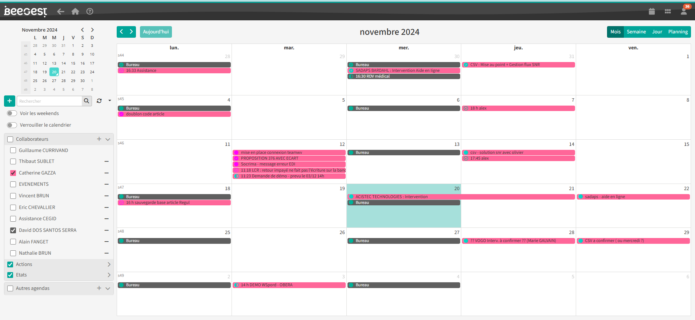
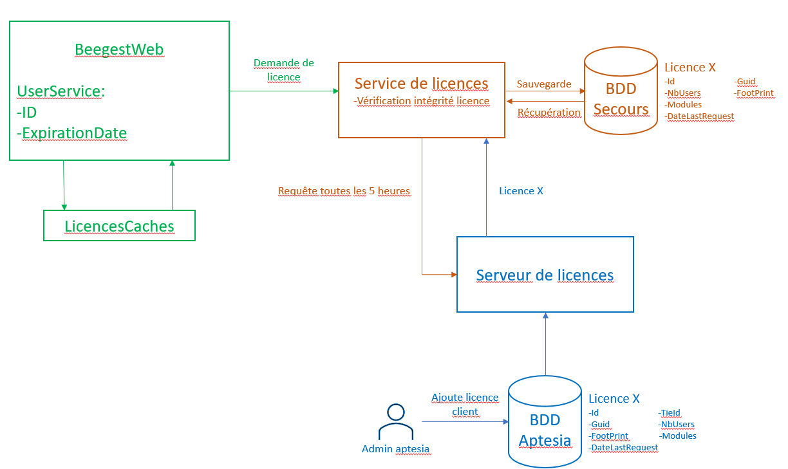

Présentation
Travail sur un système de planication des ressources d'entreprise (ERP). J'aiprocédé à sa migration vers une version entièrement web. J'ai participé audéveloppement back-end et front-end sur ce projet
Le progiciel que propose l’entreprise permet aux Très Petites Entreprises (TPE) et aux Petites et Moyennes Entreprises (PME) des solutions simples et adaptées aux contraintes qu’elles peuvent rencontrer.
La clientèle est majoritairement issue du monde industriel, elle utilise le logiciel pour la gestion de la production mais aussi pour celle de la sous-traitance.
1ère année
Développement supervisé par mon tuteur, migration de la logique métier de Delphi vers la nouvelle technologie.
Optimisation des requêtes SQL et travail sur la base de données.
Développement front-end de vues pour le logiciel.
Optimisation des requêtes SQL et travail sur la base de données.
Développement front-end de vues pour le logiciel.

2ème année
Développement semi-supervisé par mon tuteur, intégration d'un agenda dans la version full web. Adaptation à la charte graphique et ajout de fonctionnalités.

3ème année
Développement entièrement autonome, conception, développement et intégration d'un nouveau système de licences sous forme de microservice.
Utilisation de l'ORM Entity et création d'un service de licences dans notre version web. Mise en place d'un serveur accessible uniquement par l'entreprise pour la gestion des licences clients.

Utilisation de l'ORM Entity et création d'un service de licences dans notre version web. Mise en place d'un serveur accessible uniquement par l'entreprise pour la gestion des licences clients.